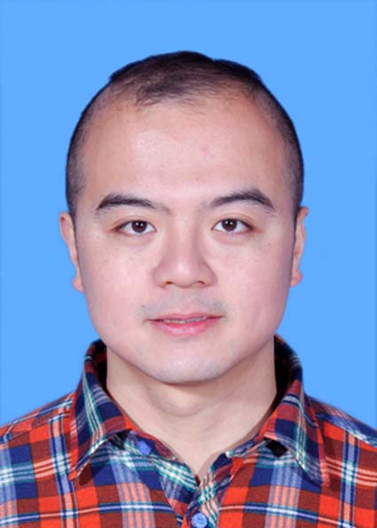

|  | PhD, Associate Professor |
I am an Associate Professor at College of Infomatics and College of Engineering, Huazhong Agricultural University. I received the Ph.D. degree in Computer Science from the University of Auckland in 2023.
My research interests lie in the areas of Deep Learning and Bioinformatics, with emphasis on the following topics:
Deep Bioinformatics (e.g., Genomic Analysis, Genetic Trait Association Analysis)
Trustworthy AI (e.g., Robustness, Interpretability)
I am recruiting Master, with high motivation of doing research on interpretable graph neural networks. If you are interested, please feel free to contact me.
Zeyu Zhang, Lu Li, Xingyu Ji, Kaiqi Zhao, Xiaofeng Zhu, Philip S. Yu, *Jiawei Li, *Maojun Wang. Enhancing Signed Graph Neural Networks through Curriculum-Based Training. Neural Networks 2025
#Xuehan Tian, #Ruipeng Wang, Zhenping Liu, Sifan Lu, Xinyuan Chen, Zeyu Zhang, Fang Liu, Hongbin Li, Xianlong Zhang, *Maojun Wang. Widespread impact of transposable elements on the evolution of post-transcriptional regulation in the cotton genus Gossypium. Genome Biology 2025
#Yiru Pan, #Xingyu Ji, #Jiaqi You, Lu Li, Zhenping Liu, Xianlong Zhang, *Zeyu Zhang, *Maojun Wang. CSGDN: Contrastive Signed Graph Diffusion Network for Predicting Crop Gene-phenotype Associations. Briefings in Bioinformatics 2025
#Chenyu Wang, #Chaoying Zuo, #Zihan Su, Yuhang Xing, Lu Li, *Maojun Wang, *Zeyu Zhang. Deep Learning and Explainable AI: New Pathways to Genetic Insights. ECAI 2025
Wanli Li, Tieyun Qian, Yi Song, *Zeyu Zhang, *Jiawei Li, Zhuang Chen and Lixin Zou. Generative Meta-Learning for Zero-Shot Relation Triplet Extraction. SIGIR 2025
Peiyao Zhao, Xin Li, Zeyu Zhang, Mingzhong Wang, Xueying Zhu, Lejian Liao, Robust Deep Signed Graph Clustering via Weak Balance Theory. WWW 2025
Lu Li, Jiale Liu, Xingyu Ji, *Maojun Wang, *Zeyu Zhang. SE-SGformer: A Self-Explainable Signed Graph Transformer for Link Sign Prediction. AAAI 2025
Zeyu Zhang, Lu Li, Shuyan Wan, Sijie Wang, Zhiyi Wang, Zhiyuan Lu, Dong Hao, *Wanli Li. DropEdge not Foolproof: Effective Augmentation Method for Signed Graph Neural Networks. NeurIPS 2024.
Sijie Wang, Lin Ni, *Zeyu Zhang, Xiaoxuan Li, Xianda Zheng, Jiamou Liu. Multimodal Prediction of Student Performance: A Fusion of Signed Graph Neural Networks and Large Language Models. Pattern Recognition Letters 2024.
Lin Ni, Sijie Wang, *Zeyu Zhang, Xiaoxuan Li, Xianda Zheng, Paul Denny, and Jiamou Liu. Enhancing Student Performance Prediction on Learnersourced Questions with SGNN-LLM Synergy. AAAI 2024.
Zeyu Zhang, Jiamou Liu, Kaiqi Zhao, Song Yang, Xianda Zheng, and Yifei Wang. Contrastive Learning for Signed Bipartite Graphs. SIGIR 2023.
Zeyu Zhang, Jiamou Liu, Xianda Zheng, Yifei Wang, Pengqian Han, Yupan Wang, Kaiqi Zhao, Zijian Zhang. RSGNN: A Model-agnostic Approach for Enhancing the Robustness of Signed Graph Neural Networks. WWW 2023.
Yifei Wang, Yupan Wang, Zeyu Zhang, Song Yang, Kaiqi Zhao, and Jiamou Liu. User: Unsupervised structural entropy-based robust graph neural network. AAAI 2023.
Qiqi Wang, Ruofan Wanga, Kaiqi Zhao, Robert Amora, Benjamin Liu, Xianda Zheng, Zeyu Zhang, Zijian Huang. Towards Legal Judgment Summarization: A Structure-Enhanced Approach. ECAI 2023.
Graduate course: Artificial Neural Networks and Deep Learning
Undergraduate course: Machine Learning
Journals reviewer for IEEE Transactions on Neural Networks and Learning System, IEEE Transactions on Knowledge and Data Engineering, ACM Transactions on Knowledge Discovery from Data, IEEE Transactions on Network Science and Engineering
Conference reviewer for NeurIPS, ICML, ICLR, KDD, AAAI, WWW, IJCAI